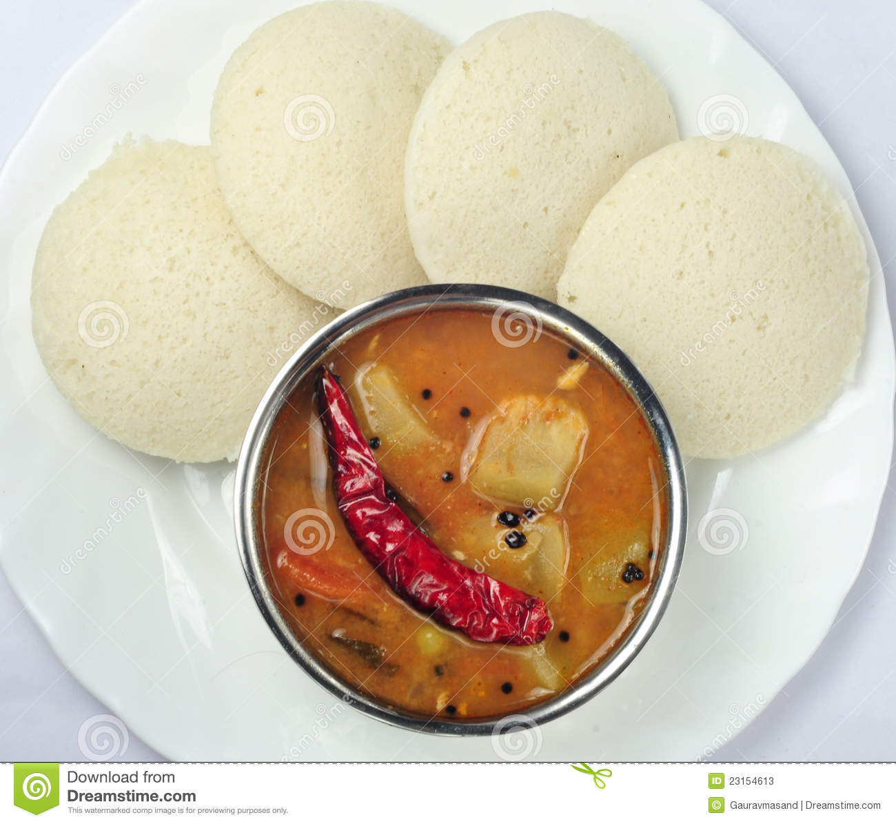
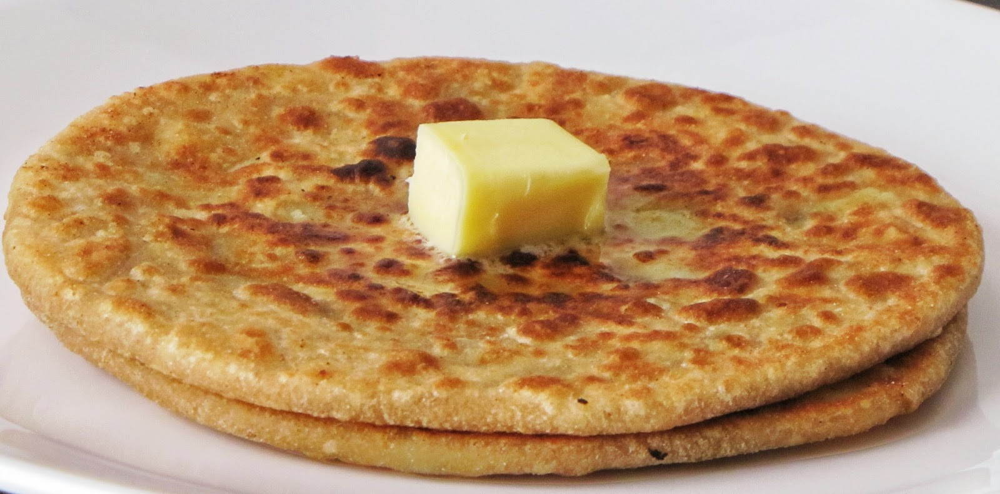
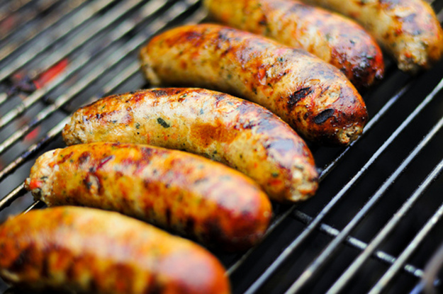

|  |
Idli Sambhar
Price 60|| Category: Breakfast Idli is a type of savoury rice cake popular |
 |
Masala Dosa
Price 90|| Category: Breakfast Masala dosa or Masale Dose is a variant of the popular |
 |
Aloo parantha
Price 15 per parantha|| Category: Breakfast Aloo ka paratha is one of the healthy Indian recipes. |
 |
Chicken Sausages
Price 120 per plate|| Category: Breakfast a chicken sausage contains just 7-10 grams of fat and |